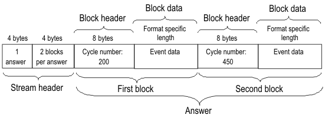

ERCE? - (Expected and Received Cycle data of Events)
The ERCE? query returns test point related cycle data in a variety of formats. The query returns one answer per pin. In contrast to ERRE?, operations that do not generate a result can also be reported.
With this command you can retrieve site specific information (only one site can be in focus at a time). For the site in focus, SmarTest displays results in the Testflow Editor and in the result tools. Also, any firmware queries report setup and results for the site currently in focus only.
Predependencies
If result data are requested, a test point pattern must have been executed for DC Scale pins.
Syntax
ERCE? {type},{start_cycle},{no_of_cycles},{data_format},{rep_mode}, [byte_max], {(pinlist)}
returns:
ERCE {type}, {start_cycle}, {no_of_cycles}, {data_format}, {rep_mode}, [error_status], {(pin)}, {#spec(data)}Parameters
| type | The supported types are:
|
|||||||
| start_cycle | The start cycle of the area from which event data is to be reported. Cycles are counted from 0. | |||||||
| no_of_cycles | The length of the cycle area from which event data is to be reported. | |||||||
| data_format | Specifies the binary data format of
#spec(data). The DC Scale cards DPS32, VI32,
and UHC4 / UHC4T support both formats.
|
|||||||
| rep_mode | Specifies the reporting
mode. Possible values are:
|
|||||||
| byte_max | In the query, this parameter specifies the maximum number of bytes that may be returned. This option can be used for the reporting mode EOLY, where the size of the data that will be returned cannot be calculated beforehand. In the reply, this parameter is used to indicate the reason in case that not all the requested results can be returned: |
|||||||
| EOB | The number of requested results exceeds the maximum buffer length specified with byte_max. | |||||||
| EOF | The result range of the query exceeds the length of the test. | |||||||
| EOM | This code is returned if the size of the answer exceeds the available storage capacity. | |||||||
| pinlist | Only DC Scale pins are considered. | |||||||
| #spec(data) | The binary data that are returned. The general format is: #Nn1n2n...nNdata_stream The N digit defines the number of the digits ni (1 ≤ i ≤ N) that specify the length of data_stream in bytes. The data stream itself consists of a stream header and one or more answers (only one answer for data formats 0 and 1), where every answer contains the same number of data blocks. The stream header defines
Every data block consists of a block header and one data unit which contains the data of one event (td element). The block header specifies the cycle number of the event anchor (defined with TPSE) (8 long bytes, big-endian encoded). The cycle number can be different from the event anchor, which is a vector number. The length of the data units depends on the selected format and on the selected type. If type is set to ALL, each data unit consists of the expected data and the received data in this order. Graphically, the structure can be illustrated by a simple example with a cycle range from 100 through 500 as follows: |
|||||||
|
 |
||||||||
Binary data formats
There are currently two data formats, 0 and 1.
Data format 0
This format only contains the received data, one byte for each measurement event. The individual bits must be decoded as follows:
Content |
Bits |
Description |
|---|---|---|
Compare result |
0 (LSB) |
Upper limit. This flag is set to 1 if all of the following conditions are satisfied:
|
1 |
Lower limit. This flag is set to 1 if all of the following conditions are satisfied:
|
|
2 |
Status information. This flag is set to 1 if at least one of the following conditions is satisfied:
|
|
Status information |
3 |
Low clamp violation. This flag is set to 1 if there is a low clamp violation. But note that it is evaluated for the status information (bit 2) only if the following additional conditions are satisfied:
|
4 |
High clamp violation. This flag is set to 1 if there is a high clamp violation. But note that it is evaluated for the status information (bit 2) only if the following additional conditions are satisfied:
|
|
5 |
Measurement range exceeded. This flag is set to 1 if the measurement range is exceeded. But note that it is evaluated for the status information (bit 2) only if the following additional conditions are satisfied:
|
|
6 |
Distance too small. This flag is set to 1 if the distance between two consecutive measurements is too small. It is always evaluated for the status information (bit 2), even if the measurement result is masked. |
|
7 (MSB) |
Type mismatch. This flag is set to 1 if the measurement type does not match the measurement range. It is always evaluated for the status information (bit 2), even if the measurement result is masked. |
Data format 1
This format can also accommodate the expected data. One expected data block covers one event (td element). The block format is as follows:
Content |
Bytes |
Bits |
Description |
|
|---|---|---|---|---|
Result checks |
1 unsigned |
0 (LSB) |
Set to 1 if lower limit is checked (failBelowLowLimit attribute of measure operation set to true with DFTD). |
|
1 |
Set to 1 if higher limit is checked (failAboveHighLimit attribute of measure operation set to true with DFTD). |
|||
2 |
Set to 1 if one of the configurable bits 3 through 5 is set (status information). |
|||
Status information |
3 |
Set to 1 if low clamp violation is checked (failOnLowClamp attribute of measure operation set to true with DFTD). |
||
4 |
Set to 1 if high clamp violation is checked (failOnHighClamp attribute of measure operation set to true with DFTD). |
|||
5 |
Set to 1 if the measurement range is checked (failOnOutOfRange attribute of measure operation set to true). |
|||
6 |
Always set to 1 (distance too small). |
|||
7 (MSB) |
Always set to 1 (type mismatch). |
|||
Note that if the event contains no measure action, all bits of this byte are set to 0. |
||||
Measurement configuration |
1 unsigned |
(LSB) 0,1,2 |
000 Event contains only no measure and no setMeasureRange operation. |
|
100 Event contains measure operation with type voltage. |
||||
010 Event contains measure operation with type current. |
||||
101 Event only contains a setMeasureRange operation with type voltage. |
||||
110 Event only contains a setMeasureRange operation with type current. |
||||
Lower value set |
3 |
Set to 1 if a lower range or limit is defined, otherwise 0. |
||
Higher value set |
4 |
Set to 1 if an upper range or limit is defined, otherwise 0. |
||
Reserved |
5,6,7 |
|||
Lower compare or range value |
8 double, big-endian |
Value of lower compare limit or range (depending on the measurement configuration) in base unit. 0 if no lower limit or range has been defined. |
||
Upper compare or range value |
8 double, big-endian |
Value of upper compare limit or range (depending on the measurement configuration) in base unit. 0 if no upper limit or range has been defined. |
||
Force type |
1 unsigned |
(LSB) 0,1,2 |
000 |
Event contains no setForceValue operation. |
001 |
Event contains setForceValue operation with type voltage. |
|||
010 |
Event contains setForceValue operation with type set to currentClamp and attribute minValue defined. |
|||
011 |
Event contains setForceValue operation with type set to currentClamp and attribute maxValue defined. |
|||
100 |
Event contains setForceValue operation with type set to currentClamp and both attribute minValue and attribute maxValue defined. |
|||
Reserved |
3 - 7 (MSB) |
|||
Force value |
8 or 16 double, big-endian |
The force value in base unit (value attribute of the setForceValue operation). If Force type <= 100: 8 byte value attribute of the setForceValue operation. If Force type = 100: 16 byte minValue and maxValue attribute of the setForceValue operation. |
||
The data block encoding for the received data is almost identical to that of data format 0 except that it also provides the measurement type and value.
Content |
Bytes |
Bits |
Description |
|---|---|---|---|
Compare result |
1 unsigned |
Same as in data format 0 |
|
Measurement type |
1 unsigned |
0,1,2 |
000: no measurement 001: Voltage 010: Current |
Reserved |
3 through 7 |
||
Measurement value |
8 double, big-endian |
Measurement value in base unit. In case of a range underflow, -99999 is returned, in case of an overflow, 99999. |
Application
DC Dynamic
Example
The following example shows a query for expected data only in the cycle range from 0 through 60000.
> ERCE? EXP,0,60000,1,ALL,,(dpsPinMea)
< ERCE EXP,0,60000,1,ALL,,(dpsPinMea),#9000000405
/x00/x00/x00/x01/x00/x00/x00/x0F
/x00/x00/x00/x00/x00/x00/x00/x46
/x00/x1D
/x00/x00/x00/x00/x00/x00/x00/x00
/x40/x10/x00/x00/x00/x00/x00/x00
/x00
/x00/x00/x00/x00/x00/x00/x00/x00
. . .The
data stream has been broken up to make it more readable. The answer contains 15
(/x0F) data blocks, of which only the first is displayed in the
example. Its cycle number is 70 (/x46). The event is a voltage
range definition (x1D) which is defined by DFTD
as
follows
DFTD "myNamespace",INSERT,(dpsPinMea),#2473<?xml version="1.0"?>
<testdata>
<td id="setMeasVoltRange" type="dcset">
<setMeasureRange type="voltage" minValue="0" maxValue="4"/>
. . . Since this is not a measurement event, the result check byte is set to 0. Note that the cycle number and the two range limits are big endian coded. The event contains no setForceValue operation.
Functional changes
- Introduced in SmarTest 6.5.2
- SmarTest 7.3.1: New Force type values 010 to 100. Force value extended to 16 bytes for force type 100.